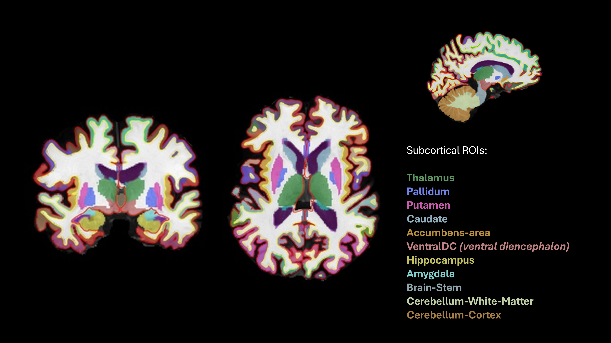
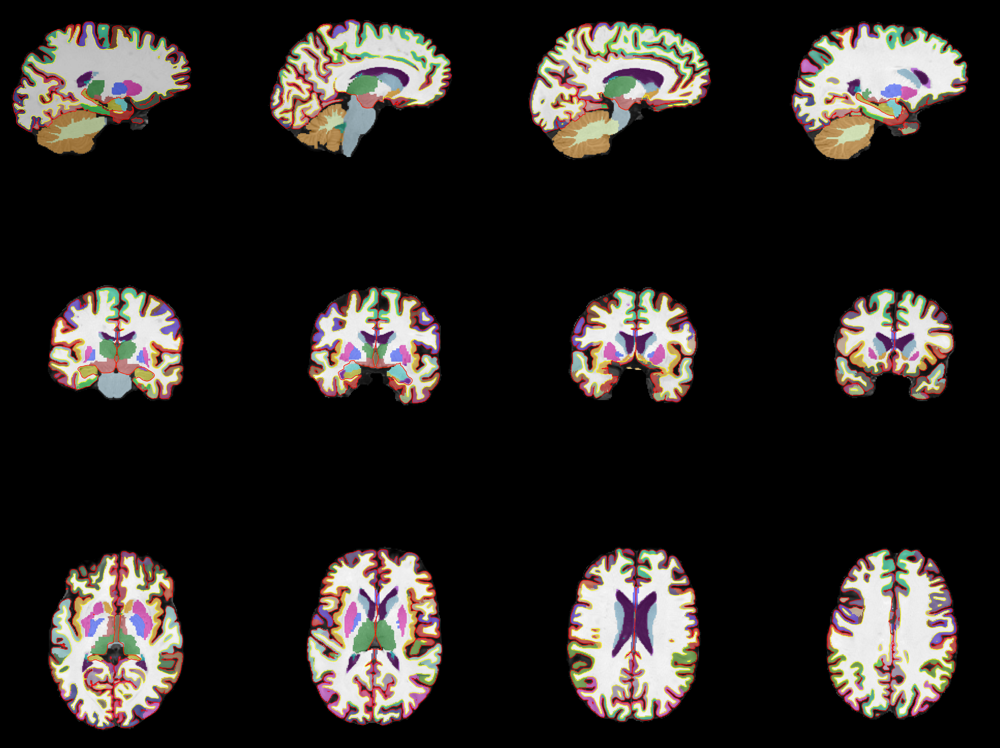
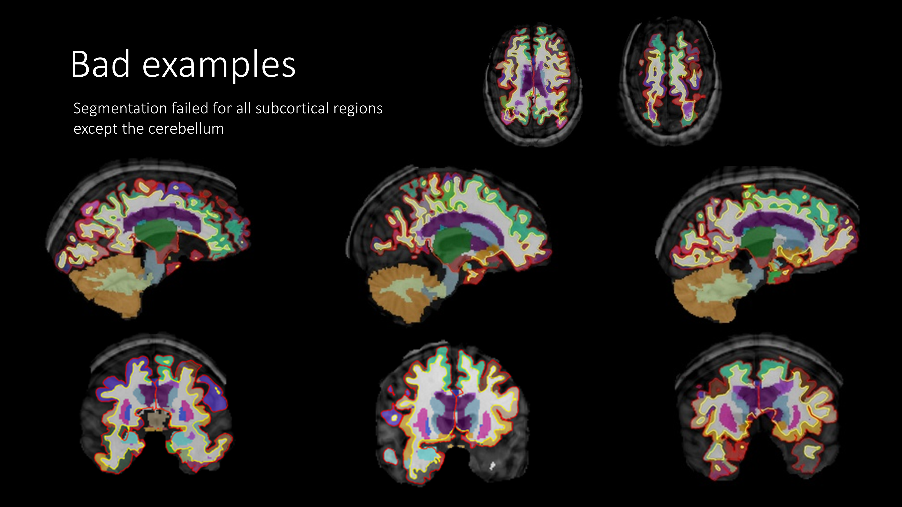
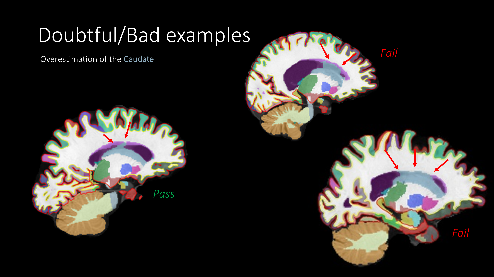
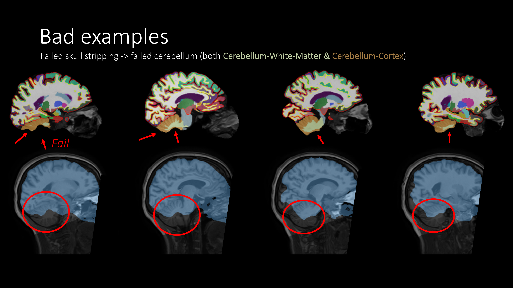

Subcortical
1. What you rate
- The FreeSurfer subcortical segmentation: the colored labels covering the deep brain structures.
- Look at all the structures together. They are located close together, so one look usually covers all of them.
- Everything looks fine? PASS all structures and move on.
- Something looks wrong? Figure out which structure(s) are affected, and fail only those. Rate left and right separately (the brainstem is a single region).
Which regions?
| Group | Structure | Color | Best view |
|---|---|---|---|
| Basal ganglia | Caudate | Light blue-gray | Anterior coronal, superior horizontal, lateral sagittal |
| Putamen | Pink | Coronal, inferior horizontal | |
| Pallidum | Blue | Posterior coronal, inferior horizontal | |
| Accumbens area | Orange | Anterior coronal | |
| Diencephalon | Thalamus | Green | Posterior coronal, inferior horizontal |
| Ventral Diencephalon | Salmon | Posterior coronal, medial sagittal | |
| Limbic | Hippocampus | Yellow | Posterior coronal, lateral sagittal |
| Amygdala | Cyan | Posterior coronal, lateral sagittal | |
| Brainstem | Brainstem | Light blue-gray (distinguish from caudate by location) | Medial sagittal |
| Cerebellum | Cerebellum white matter | Light yellow-green | Medial and lateral sagittal |
| Cerebellum cortex | Brown | Medial and lateral sagittal |
Not rated: inferior lateral ventricle (purple) and choroid plexus (teal).

2. What you see in QC-Studio

Every participant is shown at the same slice positions. Because brains differ in size and shape, a slice doesn't always land in the same spot in the brain, so a structure may be hard to see in one view. If so, use the other views.
3. What to check and how to rate
| Problem | Question to ask | What it looks like | Still PASS | FAIL |
|---|---|---|---|---|
| Distorted or misplaced structure | Does each structure have roughly the right shape and position? | A label has a very strange shape or sits in the wrong place. | Minor shape differences or asymmetry between left and right | Very distorted or clearly misplaced |
| Overestimation | Does each label stay within its structure? | A label extends into surrounding tissue, for example the caudate spreading over the white matter above the ventricle. | Slight extension at the edge | The label clearly extends along a large stretch of the neighboring tissue |
| Missing part | Is the whole structure labeled? | Part of a structure has no label, often the cerebellum after a failed skull strip. | Small bits missing | A large part is missing |
| Widespread failure | Do the labels look reasonable overall? | Many or all structures look wrong at the same time, often after motion or a failed skull strip. | — | Fail each affected structure |
- Errors are rare in the subcortex. Most structures should pass.
- Problems are often widespread. If one structure fails, check its neighbors.
4. Examples
Good segmentation

Rows from top to bottom: sagittal, coronal, and horizontal views.
Common problems
| Problem | What happens | Rating | Example |
|---|---|---|---|
| All structures failed | The segmentation failed for all subcortical structures except the cerebellum | FAIL all affected structures |  |
| Caudate overestimated | The caudate label spreads over the white matter above the lateral ventricle | PASS if slight. FAIL if it extends along most of the ventricle |  |
| Failed skull strip | The bottom of the cerebellum is cut off by the brain mask, so it's not labeled | FAIL cerebellum white matter and cerebellum cortex |  |
Other situations
| Situation | What to do |
|---|---|
| White matter hypointensities (light purple, often around the ventricles) | Not an error. These are white matter spots that look dark on T1 |
| A structure is hard to see in a view because of the slice position | Use the other views to judge it |
| A problem in one hemisphere only | Fail only that side |
| Part of the cerebellum is cut off in the T1 scan | FAIL cerebellum white matter and cortex on the affected side |
| The T1 quality was poor, but the labels look correct | PASS. Rate the segmentation, not the scan |
| The head was tilted in the scanner, so left and right structures appear at different heights or sizes in the same slice | PASS if each label fits its structure. Check the other views to confirm |